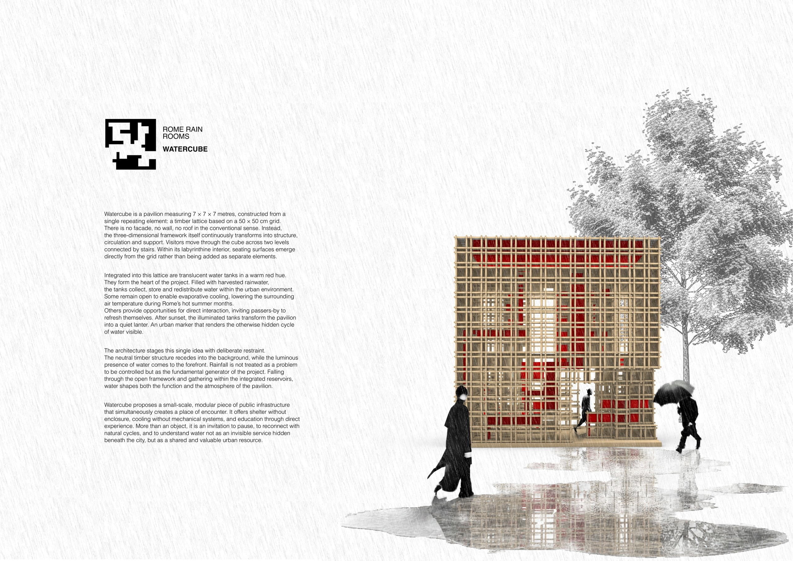
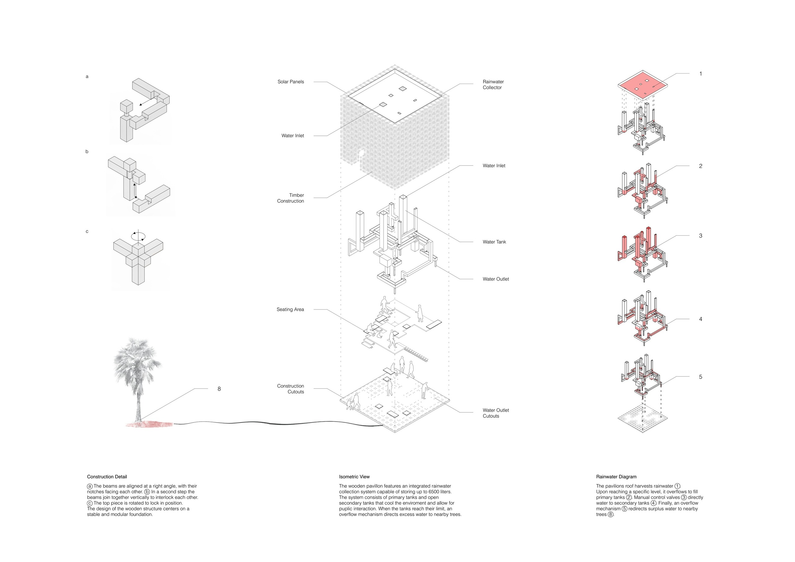
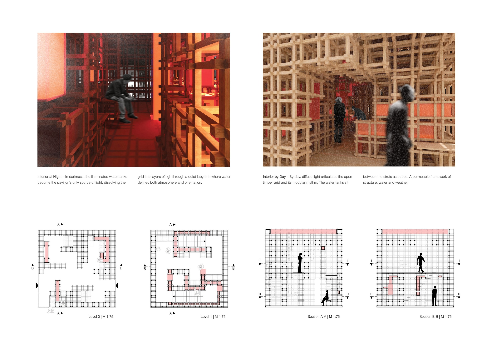
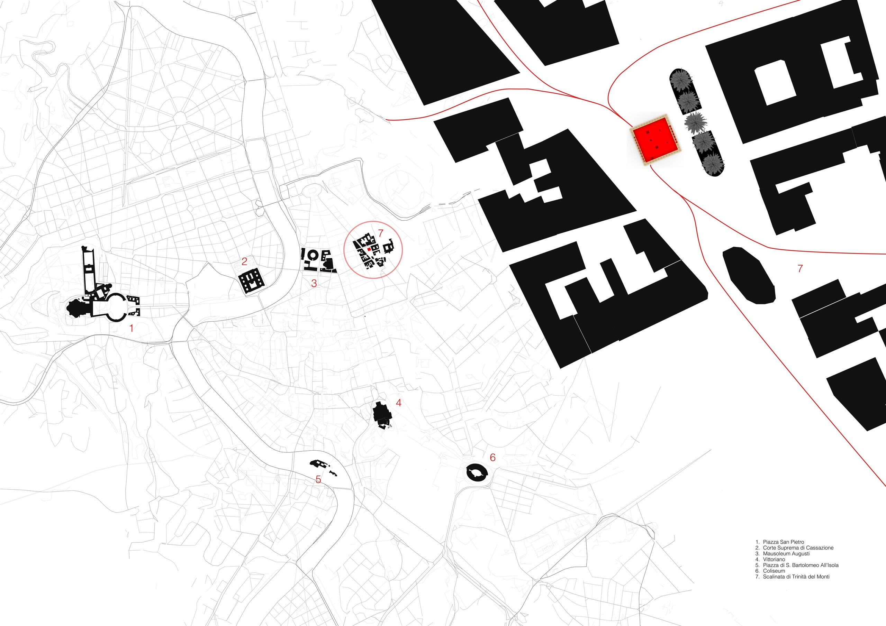

Watercube
Projekt aus dem Fach Entwurf Raum, eingereicht als Wettbewerbsbeitrag für die RomeRainRoom Competition von BUILDNER Architecture Competitions.

Watercube is a pavilion measuring 7 × 7 × 7 metres, constructed from a single repeating element: a timber lattice based on a 50 × 50 cm grid. There is no facade, no wall, no roof in the conventional sense. Instead, the three-dimensional framework itself continuously transforms into structure, circulation and support. Visitors move through the cube across two levels connected by stairs. Within its labyrinthine interior, seating surfaces emerge directly from the grid rather than being added as separate elements.
Integrated into this lattice are translucent water tanks in a warm red hue. They form the heart of the project. Filled with harvested rainwater, the tanks collect, store and redistribute water within the urban environment. Some remain open to enable evaporative cooling, lowering the surrounding air temperature during Rome’s hot summer months. Others provide opportunities for direct interaction, inviting passers-by to refresh themselves. After sunset, the illuminated tanks transform the pavilion into a quiet lanter. An urban marker that renders the otherwise hidden cycle of water visible.
The architecture stages this single idea with deliberate restraint. The neutral timber structure recedes into the background, while the luminous presence of water comes to the forefront. Rainfall is not treated as a problem to be controlled but as the fundamental generator of the project. Falling through the open framework and gathering within the integrated reservoirs, water shapes both the function and the atmosphere of the pavilion.
Watercube proposes a small-scale, modular piece of public infrastructure that simultaneously creates a place of encounter. It offers shelter without enclosure, cooling without mechanical systems, and education through direct experience. More than an object, it is an invitation to pause, to reconnect with natural cycles, and to understand water not as an invisible service hidden beneath the city, but as a shared and valuable urban resource.




This project was created in collaboration with David Schüler.